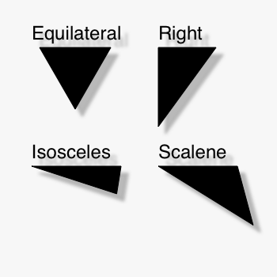

Posted by ideambulate on Jun 10, 2008
Pretty trivial, I know, but maybe it'll save someone out there a bit of geometric review.
Posted by Tom De Smedt on Jun 27, 2008
Hi ideambulate,
Thanks for sharing your code. We've also had previous posts for spirals and polygons. In the future it will become much easier to extend NodeBox with this kind of functionality, e.g. NodeBox would have an online, community-driven "node-repository" from which you can pick nodes and customize your own NodeBox.
This is part of the stuff we're working on right now, and the reason why it has been a little bit quiet on the forum lately. You can probably expect some first results around the start of 2009.

Triangles
Posted by ideambulate on Jun 07, 2008
I've implemented a simple set of self-contained functions for producing the classic varieties of triangles: equilateral, right, isosceles, and scalene. They return path objects, so you can play with the outputs handily.
Naturally, there are other ways of parameterizing triangles than the input arguments I've chosen, but these seemed the easiest for me to visualize. The "coordinates" function is included in all of them, just for the sake of modularity.